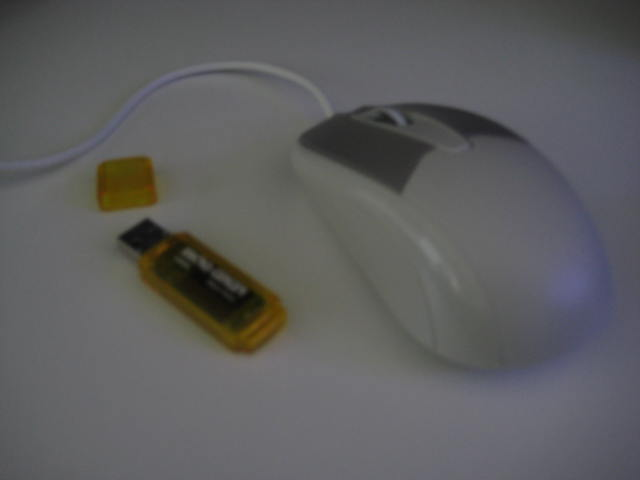
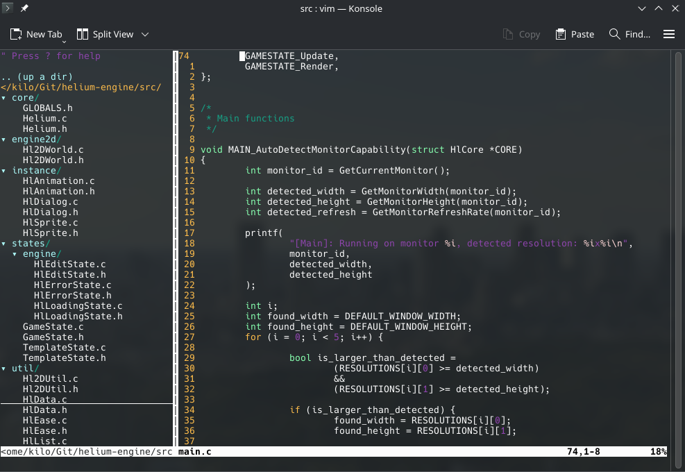

About this site
Hi! I'm kilobyte_disk, the webmaster of this site.
Welcome to my little slice of the internet;
this site is a collection of things I find interesting.
About kilobyte_disk

I like all things CS!
I have some programming experience, mainly with higher-level languages.
Currently, I'm working on C/C++. Eventually I hope to learn Rust, Assembly, and Java.
I've never done webdev before, so please excuse any strange code if you happen to dig through the repo for this site lol.
I also like messing with computer hardware, and audio equipment.